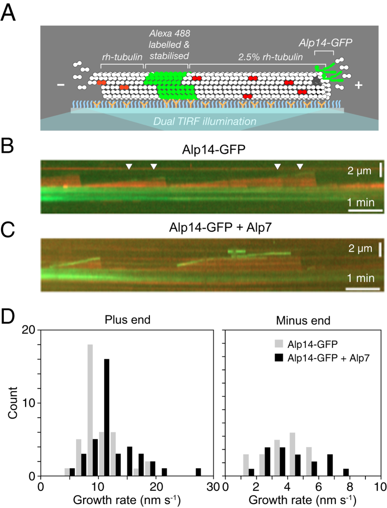

TACC/TOG complex
A protein complex that contains the transforming acidic coiled coil (TACC) protein and the TOG protein (Mia1p/Alp7p and Alp14, respectively, in fission yeast), and is involved in microtubule array remodeling as cells progress through the cell cycle. The TACC/TOG complex is conserved in eukaryotes, associates with microtubules, and shuttles between the nucleus and the cytoplasm during interphase. [GO:0070850]

NCBITaxon:4896) · Frauke Hussmann, Douglas R. Drummond, Daniel R. Peet, Douglas S. Martin, Robert A. Cross; Figure 7, DOI:10.1038/srep20653; CC BY 4.0, via PubMed Central. Original image unchanged; caption paraphrased. · CC_BY_4_0 · source: PMC PMC4749977.1 f7 · DOI:10.1038/srep20653Synonyms: TACC-TOG complex; Alp7-Alp14 complex
Components
| Component | Type | Part of / acts on | Grounding | Genes | Stoichiometry | Essential | Role |
|---|---|---|---|---|---|---|---|
| TACC-family microtubule-associated protein | Protein | part of | Reviewed label only (reviewed name; no accession asserted) | alp7, mia1 | UNKNOWN | Alp7 is the demonstrated fission-yeast TACC partner; it promotes Alp14 recruitment to organizing centers and carries the complex's nuclear import signal.
| |
| XMAP215 | Protein | part of | InterPro:IPR045110 | alp14, mtc1 | UNKNOWN | Alp14 is the demonstrated fission-yeast TOG-family partner, tubulin-binding polymerase and carrier of the complex's nuclear export signal.
|
Organism-specific protein examples
Named proteins in which each component's role was established, with the organism the evidence comes from. The component above is the taxon-agnostic family; these are the specific entries behind it.
TACC-family microtubule-associated protein
| Accession | Protein | Gene | Organism | Entry |
|---|---|---|---|---|
UniProtKB:Q9URY2 | Microtubule protein alp7 | alp7 | Schizosaccharomyces pombe 972h- (NCBITaxon:284812) | REVIEWED |
Role and evidence (2 references)Reference-sequence exemplar for species-level experiments, not an assertion that every experimental strain is this reference stock.
| ||||
XMAP215
| Accession | Protein | Gene | Organism | Entry |
|---|---|---|---|---|
UniProtKB:O94534 | Spindle pole body component alp14 | alp14 | Schizosaccharomyces pombe 972h- (NCBITaxon:284812) | REVIEWED |
Role and evidence (2 references)Reference-sequence exemplar for species-level experiments, not an assertion that every experimental strain is this reference stock.
| ||||
Canonical examples
NCBITaxon:4896Schizosaccharomyces pombe — Fission-yeast Alp7/Alp14 is the experimental exemplar. Purified-protein reconstitution and cellular perturbations do not establish prevalence across all fungi or microbial eukaryotes. [DOI:10.1038/srep20653]
Functions
- microtubule plus end polymerase activity
GO:0061863— Alp14 mediates polymerase activity; Alp7 enhances tip occupancy in purified-protein assays. Alp7 dependence of cellular elongation differs between the 2016 and 2018 studies, so it is not treated as universally required.DOI:10.1038/srep20653Purified S. pombe proteins and tubulin demonstrate plus-end growth regulation; Figure 7 uses a mixed-tubulin TIRF assay.DOI:10.1016/j.cub.2018.04.008Alp7 deletion impairs nucleation while Alp14 still tracks tips and elongation rates remain normal in this study, unlike the earlier report.
- microtubule nucleation
GO:0007020— The S. pombe complex supports efficient nucleation by recruiting Alp14 to organizing centers; loss-of-function and partial tethering rescue do not show that it is sufficient alone or required for every nucleation event.DOI:10.1016/j.cub.2018.04.008Alp7 loss impairs Alp14 MTOC recruitment and nucleation. Forced Alp14 targeting to Mto1 partially rescues nucleation in the engineered assay.
- mitotic spindle assembly
GO:0090307— Mitotic nuclear accumulation of Alp7/Alp14 supports spindle assembly in S. pombe closed mitosis.DOI:10.1091/mbc.E13-11-0679Alp7 CDK-site mutations impair nuclear accumulation and spindle behavior; an added nuclear localization signal suppresses the growth defect, not proof of full spindle-phenotype rescue.
- attachment of mitotic spindle microtubules to kinetochore
GO:0051315— Kinetochore-associated Alp7/Alp14 contributes to productive mitotic microtubule attachment in S. pombe.DOI:10.1091/mbc.E12-11-0817Ndc80 loop mutation reduces kinetochore recruitment and compromises attachment. Forced Nuf2-Alp7 C-terminal targeting supports a recruitment contribution, without resolving the complete native interface.
Mechanism graphs
Purified Alp7-Alp14 association (ASSEMBLY)
S. pombe purified-protein association supports the binary partnership. This is not an ordered assembly pathway, a native subunit count, or a resolved interface.
| Subject | Predicate | Object | Evidence |
|---|---|---|---|
| TACC-family microtubule-associated protein | binds | XMAP215 |
|
Recruitment, nucleation and attachment in fission yeast (FUNCTION)
S. pombe experiments separate MTOC recruitment/nucleation, plus-end polymerase activity and kinetochore attachment. Ndc80 and the nucleation-site machinery are external context, not extra TACC/TOG subunits.
| Subject | Predicate | Object | Evidence |
|---|---|---|---|
| TACC-family microtubule-associated protein | supports recruitment of | Alp14 recruited to organizing centers |
|
| Alp14 recruited to organizing centers | promotes | microtubule nucleation |
|
| TACC/TOG complex | supports | microtubule plus end polymerase activity |
|
| Ndc80 kinetochore docking context | supports recruitment of | Kinetochore-associated Alp7/Alp14 |
|
| Kinetochore-associated Alp7/Alp14 | supports | attachment of mitotic spindle microtubules to kinetochore |
|
CDK-linked nuclear accumulation in closed mitosis (REGULATION)
S. pombe nuclear transport is distributed between the Alp7 import signal and Alp14 export signal. CDK-site evidence supports mitotic accumulation without proving a native importin-affinity mechanism or direct CDK inhibition of export.
| Subject | Predicate | Object | Evidence |
|---|---|---|---|
| Mitotic CDK activity | promotes phosphorylation of | N-terminally phosphorylated Alp7 |
|
| N-terminally phosphorylated Alp7 | promotes mitotic accumulation of | Nuclear Alp7/Alp14 accumulation |
|
| TACC-family microtubule-associated protein | supports import of | Nuclear Alp7/Alp14 accumulation |
|
| XMAP215 | supports export toward | Cytoplasmic Alp7/Alp14 pool |
|
| Nuclear Alp7/Alp14 accumulation | supports | mitotic spindle assembly |
|
Discussions
- INTERPRETATION (RESOLVED): Keep the binary partnership distinct from the sites where it acts. GO:0070850 names a protein complex. MTOCs, microtubule ends, kinetochores and the nucleus are dynamic localization contexts, not universally asserted parent organelles.
- CURATION_TODO (OPEN): Resolve an exact whole-protein grounding for the TACC component class. Q9URY2's complete native InterPro match result provides a fungal C-terminal domain and a coiled-coil entry, not an exact whole-protein family. This bounded search does not imply homolog absence.
- KNOWLEDGE_GAP (OPEN): Determine native stoichiometry and assembly dependence separately from activity. Purified sedimentation supports association but not a universal native 2:2 copy count or interface geometry. Cellular growth, nucleation and transport defects do not independently measure whether the defined complex assembles without a constituent; essentiality remains UNKNOWN.
- CONTROVERSY (OPEN): Reconcile the different effects of Alp7 loss on microtubule elongation. The 2016 study reports reduced elongation after Alp7 deletion and potentiation in reconstitution. The 2018 study finds normal elongation with persistent Alp14 tip tracking despite impaired nucleation, explicitly noting the discrepancy. Strain or assay conditions are possible explanations, not established resolutions.
- INTERPRETATION (RESOLVED): Do not turn interaction partners and regulators into core subunits. Ndc80 supplies a kinetochore docking context; Mto1/gamma-tubulin machinery supplies nucleation sites; CDK and transport factors regulate localization. These experiments do not establish them as invariant constituents of the TACC/TOG binary partnership.
- INTERPRETATION (RESOLVED): Do not infer a Dis1-containing TACC complex from shared family membership. Alp14 and Dis1 share XMAP215-family membership, but forced targeting at tested endogenous expression did not substitute their functions. Earlier overexpression cross-rescue prevents an absolute claim of nonexchangeability at every dose or in every lineage.
- INTERPRETATION (RESOLVED): Separate the revised export assignment from unresolved transport mechanisms. Alp14 L615A retains Alp7 association whereas the older Alp7 L461A perturbation also breaks binding. Alp7 five-site phosphorylation mutants retain import. Truncated-fragment two-hybrid and reporter export data do not resolve native importin affinity or a NES-exportin interface.
- KNOWLEDGE_GAP (OPEN): Extend direct microbial evidence beyond the fission-yeast exemplar. The GO definition describes eukaryotic conservation, but the curated mechanistic experiments here concern S. pombe. No clade-wide presence frequency, identical native stock, or universal transport mechanism is asserted.
Evidence
GO:0070850Native OAK GO identity, definition and cellular-component namespace verified on 2026-10-06; direct is-a parent is GO:0140535 intracellular protein-containing complex. No universal organelle parthood is inferred from dynamic localization.DOI:10.1038/srep20653Purified full-length S. pombe Alp7 and Alp14 associate in sedimentation experiments; Alp14 binds soluble tubulin whereas Alp7 alone shows no detectable binding under the tested conditions.DOI:10.1091/mbc.E13-11-0679Full main Results, Discussion and Methods support the Alp7 import/Alp14 export division and CDK-linked mitotic localization; supplementary material was not read.DOI:10.1016/j.cub.2018.04.008Full main Results, Discussion and STAR Methods distinguish Alp7-dependent recruitment/nucleation from elongation and explicitly discuss the conflicting earlier elongation result; supplementary material was not read.DOI:10.1091/mbc.E12-11-0817Full main Results, Discussion and Methods support Ndc80-loop-dependent kinetochore association and attachment. Purified peptide binding is narrower than a resolved full-complex interface; supplementary material was not read.DOI:10.3390/ijms20205108Full main text, figure captions and strain table distinguish Alp14 and Dis1 under tested endogenous-expression and forced-targeting conditions, without claiming universal nonexchangeability at all doses.
Curation history
2026-10-06T04:52:04Zcodex · CREATED_RECORD — Scaffolded by scripts/new_record.py2026-10-06T04:57:30Zcodex · EXPANDED_RECORD — Added verified parentage, two protein component classes, fission-yeast exemplar, four functions, three evidence-backed graphs, explicit experimental/model boundaries and eight discussions; imported the inspected unchanged CC BY 4.0 reconstitution figure.2026-10-06T05:01:04Zcodex · CORRECTED_EVIDENCE — Addressed issue 2090 by attaching the 2018 study directly to the TACC component recruitment role and the polymerase edge's contrasting elongation result; scientific claims, graph topology and PROPOSED status are unchanged.2026-10-06T05:16:46Zcodex · CORRECTED_ANCHORS — Addressed issue 2091 by replacing the native-assembly discussion's bare components anchor with the two existing component IDs; biological text, graph topology and embedding projection are unchanged.